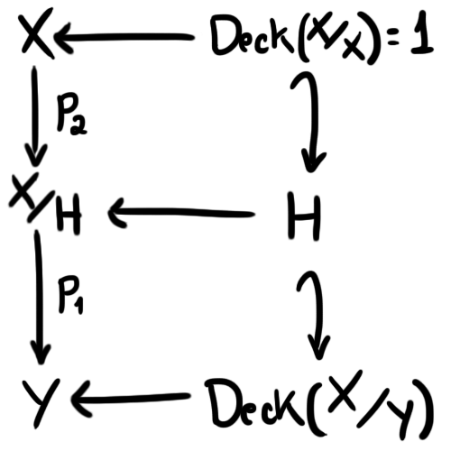

Correspondência de Galois e mais Grupos Fundamentais
Existência do Recobrimento Universal
Um recobrimento $\pi \colon X \to Y,$ diremos que $\pi$ é universal se $X$ for simplesmente conexo. Vamos provar que todo espaço conexo por caminhos, localmente conexo por caminhos e localmente simplesmente conexo possui um único recobrimento universal. Dizemos que um espaço é localmente simplesmente conexo se para todo ponto $x$ e para toda vizinhança $V$ de $x,$ existe uma vizinhança $U$ de $x$ simplesmente conexa com $U \subset V.$
A demonstração será feita de maneira construtiva através de lemas que facilitarão o entendimento das formalidades e darão alguma motivação para as definições, que poderiam parecer tiradas da cartola se este método não fosse adotado. Quando eu digo que demonstraremos o teorema "de maneira construtiva", quero dizer que assumiremos que o teorema vale e assim vamos tentar entender como seria uma construção inteligente do espaço de recobrimento $X.$ Após essa construção ter sido estabelecida, aí sim provaremos que esta é de fato um recobrimento universal.
Comece fixando um ponto $x_0 \in X$ e seja $y_0 = \pi(x_0).$ Dados dois caminhos $\gamma$ e $\tau$ de $x_0$ em $x,$ já que $X$ é simplesmente conexo temos que $\gamma$ e $\tau$ são homotópicos por uma homotopia $H,$ portanto temos que $\pi \circ \gamma$ e $\pi \circ \tau$ também são, pela homotopia $\pi \circ H.$ Além disso, podemos considerar "a volta": pelo FR.Corolário 19 temos que dados dois caminhos $\tau'$ e $\gamma'$ homotópicos de $y_0$ em $y,$ seus levantamentos $\tau$ e $\gamma$ por $\pi$ começando em $x_0$ terminam no mesmo ponto e são homotópicos.
Essa ideia faz com que possamos identificar o ponto $x$ com o conjunto de todos os caminhos homtópicos que saem de $y_0$ e chegam em $y.$ Afinal, não pode haver um caminho $\gamma$ de $y_0$ em $y$ tal que seu levantamento termine em $x$ sem que ele seja homotópico a todos os outros (pelo argumento de descer a homotopia pelo recobrimento, feito no parágrafo acima). Além disso, para todo $x \in X$ temos pelo menos um caminho de $y_0$ até $\pi(x)$ (ambos esses fatos são a prova de que existe uma bijeção entre os pontos de $X$ e as classes de caminhos em $Y$).
Podemos então definir precisamente quem será o nosso espaço de recobrimento $X$: defina $X$ como $C / \simeq$ onde $C$ é o conjunto de todos os caminhos $\gamma \colon [0,1] \to Y$ satisfazendo $\gamma(0) = y_0$ e $\simeq$ é a relação de homotopia de caminhos com mesmos extremos. Além disso, definiremos o mapa $\pi$ da maneira mais conveniente possível, vista a nossa motivação. O mapa $\pi \colon X \to Y$ será dado por $\pi([\gamma]) = \gamma(1).$ Note que este mapa está bem definido pois qualquer outro representante de $[\gamma]$ terminará no mesmo ponto de $\gamma.$ A nossa próxima tarefa é colocar uma topologia adequada em $X.$
No curso de Topologia vimos que abertos são apenas conjuntos onde variações pequenas podem acontecer sem muita preocupação. O problema é essa questão da variação. Veja bem, variar mapas não é um trabalho fácil, porém, como todos os nossos caminhos começam no mesmo lugar, talvez possamos nos preocupar em variar apenas o fim de cada um deles! A ideia é tomar uma vizinhança no fim de cada caminho e deixar que caminhos maiores se formem, juntando o original com outros menores.
Dado um caminho $\gamma$ em $Y$ que começa em $y_0,$ tome $U$ aberto trivializante de $\gamma(1)$ conexo por caminhos (podemos pedir que seja conexo por caminhos pois $Y$ é localmente conexo por caminhos, assim podemos encolher $U$ para uma vizinhança menor, conexa por caminhos). Note que se percorrermos um caminho $\alpha$ começando em $\gamma(1)$ e que esteja inteiramente contido em $U,$ o final de $\alpha$ estará em $U$ e portanto se $U'$ é uma vizinhança em $X$ homeomorfa à $U,$ teremos $\alpha'(1) \in U',$ onde $\alpha'$ é o levantamento de $\alpha$ que tem sua imagem contida em $U'.$
O que quero mostrar com toda essa construção que parece a priori complicada, é que se construimos um caminho percorrendo $\gamma$ e depois percorrendo um outro caminho inteiramente contido em $U,$ um levantamento desse caminho irá percorrer um levantamento $\gamma'$ de $\gamma$ e depois percorrer um caminho que está inteiro em $U',$ onde $U'$ é uma vizinhança de $\gamma'(1)$ homeomorfa à $U.$ Esse fato nos dará motivo para a seguinte construção de uma topologia para $X.$
Dado $\gamma$ um caminho em $Y$ começando em $y_0$ e $U$ uma vizinhança de $\gamma(1),$ definiremos o conjunto $< U,\gamma >$ como sendo o conjunto de todos as classes de $X$ que podem ser representadas por um mapa da forma $\gamma \alpha,$ onde $\alpha$ é um caminho contido inteiramente em $U$ e que satisfaz $\alpha(0) = \gamma(1).$ Um subconjunto de $X$ é dito aberto se é uma união de conjuntos da forma $< U, \gamma >$ ou se for o vazio.
Exemplo de aberto.
Lema 01: a topologia dos conjuntos da forma $< U, \gamma >$ definidos acima é de fato uma topologia.
Demonstração: note que $X = < Y, y_0 >$ onde $y_0$ nesse caso é o mapa constante e igual a $y_0.$ Além disso, o vazio é um aberto por definição. Temos também que a união arbitrária de abertos é aberto, pois uma união de conjuntos que são união de outros conjuntos da forma $< U, \gamma >$ só pode também ser uma união de conjuntos dessa forma. Mais precisamente, sem a complicação da lingua portuguesa: dada $F = \{\bigcup_j < U_{i,j}, \gamma_{i,j} >\}$ temos $\bigcup F = \bigcup_{i,j} < U_{i,j}, \gamma_{i,j} >$ que é aberto. Por fim, basta provarmos que vale a propriedade da intersecção finita, mas essa é um pouco mais complicada.
Para mostrarmos que intersecção de dois abertos é aberto, vamos apenas provar que a intersecção de $< U, \gamma >$ e $< V, \tau >$ é aberta. Podemos fazer isso pois conjuntos dessa forma são uma base para a nossa topologia (por definição, já que conseguimos todos os abertos fazendo uniões de conjuntos desse tipo). Precisamos mostrar que dado $\sigma$ com $[\sigma] \in < U, \gamma > \cap < V, \tau >$ temos $W$ vizinhança de $\sigma(1)$ tal que $< W, \sigma > \subset < U, \gamma > \cap < V, \tau >.$ Faremos isso tomando $W = U \cap V$ e mostrando que $< U \cap V, \sigma > \subset < U, \gamma >,$ pois por simetria isso significa que $< U \cap V, \sigma > \subset < V, \tau >$ e portanto $< U \cap V, \sigma > \subset < U, \gamma > \cap < V, \tau >$
Como $< U \cap V, \sigma > \subset < U, \sigma >$ vamos provar que $< U, \sigma > \subset < U, \gamma >.$ Por hipótese sabemos que $\sigma$ é homotópico a $\gamma \alpha$ com $\alpha$ inteiramente contido em $U.$ Assim, se $[\lambda] \in < U, \sigma >$ então $\lambda$ é homotópico a $\sigma \beta$ para algum $\beta$ inteiramente contido em $U,$ portanto $\lambda$ é homotópico a $\gamma \alpha \beta$ e como $\alpha$ e $\beta$ estão contidos em $U$ temos que $\alpha \beta$ é um caminho inteiramente contido em $U,$ assim $\lambda \in < U, \gamma >.$
Ilustração da demonstração.
Agora que já sabemos que nossa definição de aberto satisfaz todas as propriedades de uma topologia, o próximo passo será provar que $\pi$ é contínua. Isso, porém, é imediato, pois $\pi^{-1}(U) = \bigcup_{\gamma} < U, \gamma >$ onde $\gamma$ percorre todos os caminhos que terminam em $U.$ $\blacksquare$
Terminar a prova do nosso teorema agora se resume a mostrarmos que $\pi$ é um recobrimento e que $X$ é simplesmente conexo.
Lema 02: $\pi$ é um mapa aberto.
Demonstração: note que se $U$ é conexo por caminhos, temos que $\pi(< U, \gamma >) = U,$ portanto basta mostrarmos que qualquer aberto de $X$ pode ser escrito como união de conjuntos da forma $< U_i, \gamma_i >$ com $U_i$ conexo por caminhos. Dado $V$ aberto de $X,$ sabemos que existe uma família $\{< U_j, \gamma_j >\}$ de abertos da base tais que $V = \bigcup_j < U_j, \gamma_j >.$ Dado $v \in V,$ sabemos que existe $< U_j, \gamma_j >$ tal que $v \in < U_j, \gamma_j >.$ Seja $\gamma_v$ um representante de $v.$ Como $\gamma_v(1) \in U_j$ tome $U_v$ vizinhança de $\gamma_v(1)$ conexa por caminhos e perceba que $v \in < U_v, \gamma_v >.$ Portanto, $V \subset \bigcup_{v \in V} < U_v, \gamma_v >.$

Ilustração da demonstração acima.
Dado $x \in \bigcup_{v \in V} < U_v, \gamma_v >,$ sabemos que para algum $v \in V,$ $x \in < U_v, \gamma_v >.$ Portanto, se $\gamma_x$ é um representante de $x,$ $\gamma_x \simeq \gamma_v\alpha$ para algum $\alpha$ inteiramente contido em $U_v.$ Porém, sabemos que $\gamma_v \simeq \gamma_j\beta$ para algum caminho $\beta$ contido inteiramente em $U_j.$ Portanto, como $U_v \subset U_j$ temos que $\beta\alpha$ está inteiramente contido em $U_j$ e $\gamma_x \simeq \gamma_j\beta\alpha,$ portanto $x \in < U_j, \gamma_j > \subset V.$ $\blacksquare$
Lema 03: $\pi$ é um recobrimento.
Demonstração: dado $y \in Y$ podemos tomar $U$ vizinhança simplesmente conexa. Vamos provar que $U$ é trivializante. Vamos primeiro separar todos os caminhos de $y_0$ a $y$ em classes de homotopia e tomar a família $\{\gamma_i\}$ que consiste de exatamente um representante de cada classe. Vamos então provar que a pré-imagem de $U$ pelo mapa $\pi$ é $\bigsqcup_i < U, \gamma_i >.$
Vamos provar primeiro que esses conjuntos são disjuntos, que é a parte difícil. Se $[\sigma] \in < U, \gamma_i > \cap < U, \gamma_j >,$ como $\sigma \in < U, \gamma_i >$ então existe um caminho $\alpha$ inteiramente contido em $U$ tal que $\sigma$ é homotópico a $\gamma_i \alpha.$ Da mesma maneira temos que $\sigma$ é homotópico a $\gamma_j \beta$ para algum $\beta$ inteiramente contido em $U.$ Por fim, temos $\sigma \beta^{-1} \simeq \gamma_i \alpha \beta^{-1} \simeq \gamma_i$ pois $\alpha \beta^{-1}$ é um caminho fechado inteiramente contido em $U$ e como $U$ é simplesmente conexo, $\alpha \beta^{-1}$ é homotópico a uma constante e, além disso, $\sigma \beta^{-1} \simeq \gamma_j \beta \beta^{-1} \simeq \gamma_j.$ Assim, $\gamma_i \simeq \gamma_j,$ o que é uma contradição pois escolhemos ambos como representantes de classes de homotopia diferentes.
Vamos agora mostrar que $\pi \colon < U, \gamma_i > \to U$ é um homeomorfismo. Perceba que o mapa é sobrejetor pois todo ponto de $U$ pode ser visto como o final de um caminho começando em $\gamma_i(1)$ (já que $U$ é conexo por caminhos). Temos também que o mapa é injetor pois dados $[\gamma_i \alpha]$ e $[\gamma_i \beta],$ se a imagem de ambos por $\pi$ é a mesma então $\alpha$ e $\beta$ tem mesmos extremos e estão contidos em $U,$ portanto de GF.Proposição 17 temos que $\alpha$ e $\beta$ são homotópicos, assim $\gamma_i \alpha$ e $\gamma_i \beta$ também são e portanto $[\gamma_i \alpha] = [\gamma_i \beta].$ Por fim, como uma restrição de uma função contínua também é uma função contínua, basta mostrar que a inversa de $\pi$ é contínua. Porém, isso é consequência do fato de $\pi$ ser aberta. $\blacksquare$
Lema 04: $X$ é conexo por caminhos.
Demonstração: dado $x \in X,$ vamos mostrar que existe um caminho ligando $x$ em $x_0.$ Primeiramente, perceba que $x_0$ é exatamente a classe $[y_0]$ onde $y_0$ é o caminho constante em $y_0.$ Esse fato será importante mais para frente. Seja $\gamma$ um representante de $x.$ Para cada $t \in [0,1]$ defina o caminho $\gamma_t(x) = \gamma(x \cdot t).$ Esse caminho nada mais é que o caminho obtido ao sairmos de $\gamma(0)$ e chegarmos em $\gamma(t)$ percorrendo $\gamma.$ A ideia aqui é que podemos definir o caminho $\gamma' \colon [0,1] \to X$ dado por $t \mapsto [\gamma_t].$ Esse caminho começa em $[\gamma_0] = [\gamma(x \cdot 0)] = [\gamma(0)] = [y_0]$ e termina em $[\gamma_1] = [\gamma(x \cdot 1)] = [\gamma(x)] = [\gamma].$ $\blacksquare$
Lema 05: se $\sigma \colon Z \to W$ é um recobrimento, $\sigma_\sharp \colon \pi_1(Z, z_0) \to \pi_1(W, \sigma(z_0))$ é injetor (as notações aqui estão diferentes apenas para não haver confusão com a notação já utilizada para os mapas e conjuntos que fazem parte do problema principal).
Demonstração: dados $[x],[y] \in \pi_1(Z, z_0),$ vamos assumir que $\sigma_\sharp([x]) = \sigma_\sharp([y]),$ ou seja, $[\sigma \circ x] = [\sigma \circ y].$ Isso significa que $\sigma \circ x$ e $\sigma \circ y$ são homotópicos. Porém, como $x$ e $y$ são levantamentos destes caminhos, isso significa que estes também são homtópicos (pelo FR.Corolário 19) e assim $[x] = [y].$ $\blacksquare$
Lema 06: $X$ é simplesmente conexo.
Demonstração: o Lema 04 nos garante que $X$ é conexo por caminhos. Dado $\gamma'$ um caminho fechado com ponto-base $x_0 = [y_0],$ podemos projetar $\gamma'$ para um caminho $\gamma$ em $Y$ que também é fechado e tem ponto base $y_0.$ Para cada $t \in [0,1]$ podemos tomar os caminhos $\gamma_t$ definidos no Lema 04. Note que o caminho $\gamma'$ pode ser representado pelo mapa $t \mapsto [\gamma_t],$ pois ambos são levantamentos de $\gamma$ começando em $x_0.$ Porém, temos que $\gamma'$ é fechado por hipótese, portanto $[\gamma_0] = [\gamma_1],$ ou seja, $[y_0] = [\gamma]$ e portanto $\gamma$ é homotópico ao seu ponto-base.
Por fim, do Lema 05 temos que $\pi_\sharp$ é injetor e assim como $\pi_\sharp([\gamma']) = [\pi \circ \gamma'] = [\gamma] = [y_0] = [\pi \circ x_0] = \pi_\sharp([x_0]),$ temos que $[\gamma'] = [x_0]$ e $X$ é simplesmente conexo. $\blacksquare$
Teorema 07: se $Y$ um espaço conexo por caminhos, localmente conexo por caminhos e localmente simplesmente conexo, então $Y$ possui um recobrimento universal.
Demonstração: se vocês esperava encontrar alguma informação aqui, recomendo que re-leia a seção, você provavelmente não a entendeu completamente. $\blacksquare$
Unicidade do Recobrimento Universal
O objetivo agora é outro: queremos mostrar que a construção acima é, de certa maneira, única. Isto é, que dados dois recobrimentos universais $\pi \colon X_1 \to Y$ e $\pi' \colon X_2 \to Y,$ então existe um homeomorfismo $\phi \colon X_1 \to X_2.$ Faremos isso utilizando um resultado mais geral sobre levantamento de mapas, que não havia sido provado ainda por falta de necessidade.
Lema 08: sejam $\pi \colon X' \to X$ um recobrimento, $Y$ um espaço conexo por caminhos e localmente conexo por caminhos e $f \colon Y \to X$ um mapa contínuo. Sejam $x'_0 \in X',$ $x_0 = \pi(x'_0),$ $y_0 \in Y$ com $x_0 = f(y_0).$ Existe um levantamento $f' \colon Y \to X'$ de $f$ por $\pi$ tal que $f'(y_0) = x'_0$ se, e somente se, $f_\sharp(\pi_1(Y,y_0)) \subset \pi_\sharp(\pi_1(X', x'_0)).$
Demonstração: se existe tal levantamento $f',$ pela GF.Observação 12.2 temos que $f_\sharp = \pi_\sharp \circ f'_\sharp,$ portanto segue que $f_\sharp(\pi_1(Y,y_0)) \subset \pi_\sharp(\pi_1(X', x'_0)).$ Para a próxima parte, tome $y \in Y$ e seja $\gamma$ caminho ligando $y_0$ em $y.$ O mapa $f \circ \gamma$ é um caminho começando em $x_0.$ Assim, existe um único levantamento $f_\gamma$ de $f \circ \gamma$ com $f_\gamma(0) = x'_0.$ Defina então $f'(y) = f_{\gamma}(1).$
Esse mapa está bem definido, pois dado outro caminho $\sigma$ de $y_0$ em $y$ temos que $H_0$ dado por $(f \circ \sigma)(f \circ \gamma)^{-1}$ é um caminho fechado com ponto-base $(f \circ \sigma)(0) = f(y_0) = x_0.$ Além disso, temos que $[H_0] \in f_\sharp(\pi_1(Y,y_0)) \subset \pi_\sharp(\pi_1(X', x'_0))$ pois $f \circ \sigma\gamma^{-1} \simeq (f \circ \sigma)(f \circ \gamma)^{-1}.$ Portanto, existe $[\alpha] \in \pi_1(X,x_0)$ com $H_0 \simeq \pi \circ \alpha,$ que é um caminho em $X$ que vamos chamar de $H_1$ daqui para frente. Levante a homotopia usando o FR.Corolário 19 e teremos que como $H'_1 = \alpha$ (pela FR.Proposição 17) é um caminho fechado em $x'_0,$ $H'_0$ também é. Novamente pela FR.Proposição 17 temos que $H'_0 = f_\sigma f_\gamma^{-1}$ e portanto $f_\gamma(1) = f_\gamma^{-1}(0) = f_\sigma(1).$ Assim, segue que $f'$ está bem definida. Perceba também que $f'$ é de fato um levantamento de $f$ pois $(\pi \circ f')(y) = (\pi \circ f_\gamma)(1) = (f \circ \gamma)(1) = f(y).$
O mapa $f'$ está bem definido.
Por fim, $f'$ é contínua, pois dada $U$ vizinhança trivializante de $f(y) \in X,$ seja $U'$ um aberto homeomorfo a $U$ por $\pi$ tal que $f'(y) \in U'.$ Como $Y$ é localmente conexo por caminhos, seja $V$ vizinhança de $y$ conexa por caminhos com $V \subset f^{-1}(U)$ (note que $f^{-1}(U)$ é aberto pois $f$ é contínua). Vamos provar que $f'(V) \subset U'$ e assim poderemos escrever $\pi|_{U'} \circ f'|_V = f|_V$ e daí teremos $f'|_V = (\pi|_{U'})^{-1} \circ f|_V,$ de onde segue que $f'$ é contínua em $V$ e, em particular, em $y.$ Como $y$ é escolhido arbitrariamente, concluímos que $f'$ é contínua.
Por definição, temos que $f'|_V(v) = f_{\gamma}(1)$ onde $\gamma$ é um caminho que liga $y_0$ em $v.$ Como $y \in V,$ tome $\gamma_v$ caminho que liga $y$ em $v$ e fixe $\sigma$ caminho ligando $y_0$ em $y.$ Note que $\sigma\gamma_v$ é um caminho ligando $y_0$ em $v.$ Além disso, temos que $f_{\sigma\gamma_v}$ é um levantamento de $f \circ \sigma\gamma_v = (f \circ \sigma)(f \circ \gamma_v)$ e portanto podemos escrever $f_{\sigma\gamma_v}(1) = (f_\sigma)(f \circ \gamma_v)'(1) = (f \circ \gamma_v)'(1) \in U'$ pois $f \circ \gamma_v$ está inteiramente contido em $f(V) \subset U.$ Assim, $f'|_V(v) \in U'$ e o resultado segue. $\blacksquare$
Chamaremos o lema acima de critério de levantamento. Agora, vamos provar o lema conhecido como propriedade do levantamento único.
Lema 09: dados um recobrimento $\pi \colon X' \to X$ e um mapa $f \colon Y \to X$ com $Y$ conexo, se dois levantamentos $f_1, f_2 \colon Y \to X'$ de $f$ coincidem em um ponto, então $f_1 = f_2.$
Demonstração dado um ponto $y \in Y,$ seja $U$ uma vizinhança trivializante de $f(y).$ Sejam $U_1$ e $U_2$ abertos homeomorfos a $U$ por $\pi$ tais que $f_1(y) \in U_1$ e $f_2(y) \in U_2.$ Pela continuidade de ambas, existe uma vizinhança $N$ de $y$ tal que $f_1(N) \subset U_1$ e $f_2(N) \subset U_2.$ Se $f_1(y) \neq f_2(y)$ então temos $U_1 \neq U_2$ e portanto estas são disjuntas, o que significa que $f_1$ e $f_2$ diferem em todo o $N$ e portanto $\{t \colon f_1(t) = f_2(t)\}$ é fechado. Analogamente, se $f_1(y) = f_2(y)$ temos que $U_1 = U_2$ e assim $f_1$ e $f_2$ coincidem em todo o $N$ (pois $\pi \circ f_1 = \pi \circ f_2$ e $\pi$ é injetora em $U_1 = U_2$), portanto $\{t \colon f_1(t) = f_2(t)\}$ é aberto. Como este conjunto é aberto e fechado num conexo, então ou é vazio ou é todo o espaço. $\blacksquare$
Vamos provar o teorema principal dessa seção: recobrimentos universais são únicos a menos de isomorfismos. Resta sabermos agora o que seria um isomorfismo entre recobrimentos! Diremos que dois recobrimentos $\pi \colon X \to Y$ e $\pi' \colon X' \to Y$ são isomorfos se existe um homeomorfismo $f \colon X \to X'$ tal que $\pi \circ f = \pi'$ ou, equivalentemente, $\pi' \circ f^{-1} = \pi.$
Teorema 10: se $\pi \colon X \to Y$ e $\pi' \colon X' \to Y$ são dois recobrimentos universais com $X$ e $X'$ localmente conexos por caminhos, então $\pi$ e $\pi'$ são isomorfos.
Demonstração: seja $y \in Y.$ Sejam $x \in \pi^{-1}(y)$ e $x' \in \pi'^{-1}(y).$ Como ambos os recobrimentos são universais, sabemos que $\pi_1(X, x) = \pi_1(X', x') = \{1\}$ e portanto $\pi_\sharp(\pi_1(X,x)) = \pi'_\sharp(\pi_1(X', x)) = \{1\}.$ Portanto, pelo Lema 08, existem levantamentos $f \colon X \to X'$ de $\pi$ por $\pi'$ e $f' \colon X' \to X$ de $\pi'$ por $\pi.$ Mais que isso, esses levantamentos são únicos se assumirmos que $f(x) = x'$ e $f'(x') = x$ (pelo Lema 09).
Note que $f \circ f' \colon X' \to X'$ é um levantamento de $\pi'$ por $\pi',$ pois $\pi' \circ (f \circ f') = (\pi' \circ f) \circ f' = \pi \circ f' = \pi'$ e temos $(f \circ f')(x') = f(x) = x'.$ Assim, novamente pelo Lema 09 temos que $f \circ f' = Id_{X'}.$ Da mesma maneira podemos provar que $f' \circ f = Id_{X}$ e portanto temos que tanto $f$ quanto $f'$ são homeomorfismos entre $X$ e $X'.$ Dá definição de levantamento segue que $f$ e $f'$ são isomorfismos entre $\pi$ e $\pi'.$ $\blacksquare$
O Grupo Deck
Denotaremos o conjunto de todos os isomorfismos de um recobrimento $\pi \colon X \to Y$ nele mesmo, ou seja, os homeomorfismos $f \colon X \to X$ tais que $\pi \circ f = \pi,$ por $\textrm{Deck}(X/Y).$ Chamaremos esse conjunto de grupo Deck de $\pi$ e seus elementos de transformações deck de $\pi.$
Proposição 11: o grupo Deck de um recobrimento $\pi \colon X \to Y$ é um grupo com respeito à composição.
Demonstração: dadas duas transformações deck $f$ e $g,$ sabemos que $f \circ g$ é homeomorfismo e $\pi \circ (f \circ g) = (\pi \circ f) \circ g = \pi \circ g = \pi,$ portanto $f \circ g \in \textrm{Deck}(X/Y).$ Note também que $\pi \circ Id_X = \pi,$ portanto $Id_X \in \textrm{Deck}(X/Y).$ Como $Id_X$ será a identidade do grupo, o elemento inverso de $f$ é obrigatoriamente $f^{-1}.$ De fato, $f^{-1}$ é homeomorfismo e $\pi = \pi \circ Id_X = \pi \circ (f \circ f^{-1}) = (\pi \circ f) \circ f^{-1} = \pi \circ f^{-1}.$ Assim, $f^{-1} \in \textrm{Deck}(X/Y).$ Note que utilizamos a associatividade da operação muitas vezes aqui, mas como a operação é a composição usual de funções, já sabemos que esta é associativa. $\blacksquare$
Observação 12: perceba que um elemento de $\textrm{Deck}(X/Y)$ pode ser visto como um levantamento de $\pi$ com respeito a $\pi$ que é também um homeomorfismo. Por isso, da propriedade do levantamento único segue que recobrimentos são completamente determinados pela imagem de um ponto do domínio.
Um recobrimento $\pi \colon X \to Y$ é dito normal se, para cada $y \in Y$ e cada par de elementos $x, x' \in \pi^{-1}(y)$ existe uma transformação deck $f$ tal que $f(x) = x'.$
Exemplo 13: o recobrimento $\pi \colon \mathbb{R} \to \mathbb{S}^1$ dado por $\pi(t) = (\cos{t}, \sin{t})$ é normal, pois dados $x \in \mathbb{S}^1$ e $y, z \in \pi^{-1}(x),$ podemos definir $f(t) = t - y + z.$ Note que $f(y) = z,$ $f$ tem inversa $g(t) = t + y - z$ e ambas são contínuas. Mais ainda, $\pi(f(t)) = \pi(t - y + z) = \pi(t)$ pois como $y,z \in \pi^{-1}(x)$ temos que $|y - z| = 2k\pi$ para algum $k$ inteiro.
Recobrimentos normais podem ser chamados de recobrimentos regulares. O nome recobrimento normal é justificado majoritariamente pela correspondência de Galois.
Correspondência de Galois
Na teoria de corpos, a correspondência de Galois traduz problemas de extensões de corpos para problemas sobre grupos. Mais especificamente, dado uma extensão $E/F$ de corpos, podemos achar seu grupo de Galois $\textrm{Gal}(E/F).$ A correspondência diz que os corpos intermediários desta extensão, ou seja, corpos $K$ tais que $F \subset K \subset E$ estão em correspondência direta com os subgrupos de $\textrm{Gal}(E/F).$
Proposição 14: dado um recobrimento universal $\pi \colon X \to Y$ com $X$ localmente conexos por caminhos e conexo por caminhos e um outro recobrimento $\sigma \colon X' \to Y$ com $X'$ conexo por caminhos e localmente conexo por caminhos, existe um recobrimento $\lambda \colon X \to X'.$ Diremos que esse recobrimento $\sigma$ é um recobrimento intermediário de $\pi.$
Demonstração: fixe $x'_0 \in X',$ $y_0 = \sigma(x'_0)$ e $x_0 \in \pi^{-1}(y_0)$. Pelo Lema 08 sabemos que existe um levantamento $\lambda$ de $\pi$ por $\sigma$ tal que $\lambda(x_0) = x'_0$. Basta provarmos que $\lambda$ é um recobrimento.
Dado $x' \in X'$, sejam $V'$ vizinhança trivializante de $\sigma(x')$ por $\sigma$ e $V$ vizinhança trivializante de $\sigma(x')$ por $\pi$. Seja $N \subset V \cap V'$ vizinhança de $\sigma(x')$ conexa por caminhos. Note que $N$ é trivializante de $\sigma(x')$ por ambos os recobrimentos. Tome $N'$ vizinhança homeomorfa a $N$ por $\sigma$ contendo $x'$. Note que $\pi^{-1}(N)$ $=$ $(\sigma \circ \lambda)^{-1}(N)$ $=$ $\lambda^{-1}(\sigma^{-1}(N))$, portanto $\lambda^{-1}(N') \subset \pi^{-1}(N)$.
Dada $N'_i$ componente conexa por caminhos de $\lambda^{-1}(N')$, sabemos que $N'_i \subset N_j$ para algum $j$, afinal, cada $N_i$ é uma componente conexa por caminhos de $\pi^{-1}(N)$. Dado $x \in N_j$, seja $w \in N_i$ e $\gamma$ o caminho ligando $w$ e $x$. Temos que o caminho $\pi \circ \gamma$ liga $\pi(w)$ em $\pi(x)$. Mais ainda, temos o caminho $\alpha$ que liga $x_0$ em $w$ e o caminhos $\pi \circ \alpha$ que liga $y_0$ em $\pi(w)$. Levantando ambos os caminhos conseguimos o caminho $\alpha'$ que liga $x'_0$ em $\lambda(w)$ e o caminho $\gamma'$ que liga $\lambda(w)$ em $x' \in \sigma^{-1}(\pi(x))$. O que acontece é o caminho $\alpha'\gamma'$ liga $x'_0$ em $x'$ e assim por definição de $\lambda$ temos que $x' = \lambda(x)$. Mais ainda, temos que $\lambda(x) \in N'$ e assim $x \in \lambda^{-1}(N')$. Com isso, temos que $x$ está em uma componente conexa por caminhos de $\lambda^{-1}(N)$, mas como existe um caminho de um elemento de $N'_i$ em $x$, segue que $x \in N'_i$ e portanto $N'_i = N_j$.
A igualdade acima mostra que $\lambda^{-1}$ é união disjunta de algumas componentes conexas de $\pi^{-1}(N)$. Basta mostrarmos que cada $N'_i$ é homeomorfa a $N$ por $\lambda$. Isso vem da igualdade $\pi = \sigma \circ \lambda$, já que isso implica em $\pi|_{N'_i} = (\sigma \circ \lambda)|_{N'_i}$ e assim $\pi|_{N'_i} = \sigma|_{\lambda(N'_i)} \circ \lambda|_{N'_i}$. Porém, $\lambda(N'_i) = N'$, portanto $\lambda_{N'_i} = (\sigma|_{N'})^{-1} \circ \pi|_{N'_i}$. Ambos os mapas do lado direito são homeomorfismos e daí segue que $\lambda|_{N'_i}$ é homeomorfismo. $\blacksquare$
Dado $\pi \colon X \to Y$ um recobrimento universal e $\sigma \colon X' \to Y$ um recobrimento não necessariamente universal, temos que para cada espaço podemos associar um grupo da seguinte maneira:
$\lambda$ é o recobrimento que vem da Proposição 14.
Lema 15: $\textrm{Deck}(X/X') \subset \textrm{Deck}(X/Y).$
Demonstração: dado $f \in \textrm{Deck}(X/X'),$ temos que $\lambda \circ f = \lambda$ e compondo com $\sigma$ de ambos os lados temos $\sigma \circ \lambda \circ f = \sigma \circ \lambda,$ assim $\pi \circ f = \pi$ e portanto $f \in \textrm{Deck}(X/Y).$ $\blacksquare$
Além disso, temos também "a volta": dado um subgrupo $H$ de $\textrm{Deck}(X/Y),$ podemos provar que $X \to X/H$ é um recobrimento. Mais ainda, podemos definir o mapa $X/H \to Y$ dado por $Hx \mapsto \pi(x),$ onde $Hx$ é o conjunto $\{hx \colon h \in H\}$ ($hx$ é a imagem de $(h,x)$ pela ação de $H$ em $X$). Esse mapa também será um recobrimento.
Aqui, temos $\lambda(x) = Hx$ e $\sigma(Hx) = \pi(x)$.
Lema 16: a ação de $\textrm{Deck}(X/Y)$ em $X$ é uma ação de recobrimento, ou seja, todo ponto $x \in X$ possui uma vizinhança $V$ tal que $gV \cap V \neq \emptyset$ implica que $g = Id_X.$
Demonstração: dado $x \in X,$ tome $U$ vizinhança de $\pi(x)$ trivializante e conexa por caminhos. Seja $V$ componente conexa por caminhos de $\pi^{-1}(U) = \bigsqcup V_i$ com $x \in V.$ Como $U$ é conexa por caminhos, cada um dos $V_i$ é uma componente conexa por caminhos, assim $V = V_i$ para algum $i$ e portanto $V$ é homeomorfo à $U.$
Vamos provar agora que se $gV \cap V \neq \emptyset,$ então $gV = V.$ Isso vem do fato de $\pi \colon gV \to U$ ser um homeomorfismo, já que $\pi|_{gV} = \pi|_{V} \circ g^{-1}$ (afinal, $\pi|_{V}(g^{-1}(g(v))) = \pi|_V(v) = \pi(v)$ e $\pi|_{gV}(g(v)) = \pi(g(v)) = \pi(v)$).
Pelo homeomorfismo acima, sabemos que $gV$ é conexa por caminhos, portanto $gV \subset V_i$ para algum $V_i$. Se existe $x \in gV \cap V$, então sabemos que $gV \subset V$. Como ambos são homeomorfos à $U$ por $\pi$, segue que $V = gV$. Basta então mostrarmos que $g = Id_X.$ Isso, porém, é imediato, já que para todo $v \in V$, temos $g(v) = v,$ já que $\pi(g(v)) = \pi(v)$ e $\pi|_V$ é homeomorfismo (a igualdade segue da unicidade do levantamento). $\blacksquare$
Lema 17: se $H$ é um grupo de isomorfismos que age por recobrimento em $X,$ então o mapa quociente $\lambda \colon X \to X/H$ é um recobrimento.
Demonstração: primeiramente, vamos provar que a aplicação $\lambda$ é aberta. Dado $W$ um aberto de $X$, como cada $g \in H$ é um homeomorfismo de $X$ em $X$, temos que $gW$ é aberto em $X$. Assim, a união $\bigcup_{g \in H} gW$ é também um aberto de $X$. Basta mostrarmos então que $\lambda^{-1}(\lambda(W)) = \bigcup_{g \in H} gW$, afinal, pela definição da topologia quociente temos que $U$ é aberto se, e somente se, $\lambda^{-1}(U)$ é aberto. Nesse caso, a igualdade garante que $\lambda^{-1}(\lambda(W))$ é aberto e portanto $\lambda(W)$ também será, provando assim que $\lambda$ é aberta.
Dado $x \in \lambda^{-1}(\lambda(W))$, temos que $\lambda(x) \in \lambda(W)$, ou seja, $\lambda(x) = \lambda(w)$ para algum $w \in W,$ o que significa que $Hx = Hw$. Daí segue que $x = h(w)$ para algum $h \in H$. Portanto, $x \in hW$ e por consequência, $x \in \bigcup_{g \in H} gW$.
Agora, dado $x \in \bigcup_{g \in H} gW$, temos que $x \in gW$ para algum $g \in H$. Assim, $x = g(w)$ para algum $w \in W$. Dessa forma, temos que $Hx = Hw$ e portanto $\lambda(x) = \lambda(w)$, o que faz com que $x \in \lambda^{-1}(\lambda(W))$. Note que a igualdade poderia ter sido provada com uma sequência de equivalências ao invés do método de dupla contenção, mas eu pessoalmente prefiro deste jeito pois diminui a chance de erros, nunca fui muito bom com equivalências. Agora que já provamos que $\lambda$ é aberta, vamos terminar provando que $\lambda$ é de fato um recobrimento.
Tome $Hx \in X/H.$ Seja $W$ vizinhança de $x$ que satisfaz a condição da ação de recobrimento. Temos que $\lambda(W)$ é aberto e $\lambda^{-1}(\lambda(W)) = \bigcup_g gW.$ Porém, podemos escrever $\bigcup_g gW = \bigsqcup_g gW,$ poisos $gW$ são dois a dois disjuntos (pela condição da ação de recobrimento, que pode ser reescrita como $gW \cap hW \neq \emptyset \implies g = h$). Basta mostrarmos agora que o mapa $\lambda \colon gW \to \lambda(W)$ é um homeomorfismo para todo $g.$ Como $\lambda$ é contínua e aberta, basta mostrarmos que o mapa é uma bijeção.
Sejam $w_1, w_2 \in W$ tais que $\lambda(g(w_1)) = \lambda(g(w_2)).$ Temos que $Hg(w_1) = Hg(w_2)$ e assim $g(w_1) = h(w_2)$ para algum $h \in H$. Aplicando $h^{-1}$ de ambos os lados temos $h^{-1}(g(w_1)) = w_2$. Porém, isso significa que $w_2 \in W \cap h^{-1}gW$ e portanto $h^{-1}g = Id_X$. Isso significa que $g = h$ e assim temos $g(w_1) = g(w_2)$ e portanto $\lambda$ é injetora. Para a sobrejeção, temos $\lambda(gW) = HgW = HW = \lambda(W)$. $\blacksquare$
Corolário 18: a aplicação $\lambda \colon X \to X/H$ dada por $x \mapsto Hx$ é um recobrimento.
Demonstração: do Lema 16 temos que $H$ age por recobrimento em $X$ e do Lema 17 o corolário segue.
Lema 19: o mapa $\sigma \colon X/H \to Y$ dado por $Hx \mapsto \pi(x)$ é um recobrimento.
Demonstração: o mapa está bem definido pois se $Hx = Hy$ temos que $x = h(y)$ para algum $h \in H$ e assim $\pi(x) = \pi(h(y)) = \pi(y)$. Além disso, $\sigma$ é contínuo, pois dado $W$ aberto em $Y$, sabemos que $\pi^{-1}(W)$ é aberto. Isso significa que $(\sigma \circ \lambda)^{1}(W) = \lambda^{-1}(\sigma^{-1}(W))$ é aberto e pela definição da topologia quociente segue que $\sigma^{-1}(W)$ é aberto.
Seja $y \in Y$ com $V$ vizinhança trivializante de $y$ por $\pi$. Se $\pi^{-1}(V) = \bigsqcup_i V_i$. Para cada $x_i \in V_i$ com $\pi(x_i) = y$, tome $U_i$ vizinhança de $x_i$ que satisfaz a condição da ação de recobrimento de $H$ em $X$. Defina $U = \bigcap_i \pi(U_i)$. Como cada $\pi(U_i) \subset V$, sabemos que $U$ é trivializante de $y$. Mais do que isso, se $\pi^{-1}(U) = \bigsqcup_i W_i$, então cada $W_i \subset U_j$ para algum $j$ (em particular, vamos reindexar para que $j$ seja $i$).
Note agora que dado $g \in H$, se existe $x \in gW_i \cap W_i$, então $x \in gU_i \cap U_i$ e portanto $g = Id_X$, ou seja, os conjuntos $W_i$ satisfazem a condição da ação de recobrimento. Vamos provar que $\sigma^{-1}(U) = \bigsqcup_i \lambda(W_i)$. Primeiro, perceba que se existe $x \in \lambda(W_i) \cap \lambda(W_j)$, então $x = \lambda(w_i) = \lambda(w_j)$ para $w_i \in W_i$ e $w_j \in W_j$. Assim, $Hw_i = Hw_j$ e portanto $w_i = h(w_j)$ para algum $h \in H$ e daí segue que $w_i \in W_i \cap hW_i$ e portanto $h = Id_x$. Isso implica que $w_i = w_j$ e portanto $w_i \in W_i \cap W_j$, o que é um absurdo pois $W_i$ e $W_j$ são disjuntos.
Agora que já provamos que a união $\bigcup_i \lambda(W_i)$ é disjunta, ou seja, podemos escrevê-la como $\bigsqcup_i \lambda(W_i)$. Basta provarmos que $\sigma^{-1}(U) = \bigsqcup_i \lambda(W_i)$. Dado $Hx \in \sigma^{-1}(U)$, sabemos que $\sigma(Hx) \in U$ e portanto $\pi(x) \in U$. Portanto $x \in W_i$ e assim $Hx \in \lambda(W_i) \subset \bigsqcup_i W_i$. Se $Hx \in \bigsqcup_i \lambda(W_i)$ então $Hx \in \lambda(W_i)$ para algum $i$. Isso significa que $Hx = \lambda(w_i)$ para algum $w_i \in W_i$ e portanto $\sigma(Hx) = \pi(w_i) \in U$, o que significa que $Hx \in \sigma^{-1}(U)$.
Por fim, cada $\lambda(W_i)$ é homeomorfo a $U$ por $\sigma$ pois $\sigma \circ \lambda = \pi$. Assim, $\sigma|_{\lambda(W_i)} \circ \lambda|_{W_i} = \pi|_{W_i}$ e temos que $\sigma|_{\lambda(W_i)} = \pi|_{W_i} \circ (\lambda|_{W_i})^{-1}$. $\blacksquare$
Com isso, provamos que existe uma correspondência entre recobrimentos intermediários e subgrupos do grupo deck de um recobrimento universal. A questão que fica é: como isso nos ajuda a calcular grupos fundamentais? Na verdade, veremos agora que $\textrm{Deck}(X/Y)$ é isomorfo à $\pi_1(Y)$.
Calculando Grupos Fundamentais
Teorema: se $\pi \colon X \to Y$ é um recobrimento universal com $Y$ é conexo por caminhos, então $\textrm{Deck}(X/Y)$ é isomorfo a $\pi_1(Y)$.
Demonstração: fixe $y_0 \in Y$. Como recobrimentos universais são únicos, podemos assumir que $X$ é construído da maneira feita no Teorema 07. Dessa forma, cada elemento $[x] \in \pi_1(Y, y_0)$ é também um elemento de $X$. Considere portanto o isomorfismo $\phi \colon \textrm{Deck}(X/Y) \to \pi_1(Y, y_0)$ dado por $h \mapsto h([y_0])$. Primeiro, devemos mostrar que esse mapa está bem definido, ou seja, que $h([y_0]) \in \pi_1(Y, y_0)$. Seja $\gamma$ um representante de $h([y_0])$. Devemos provar que $\gamma(0) = \gamma(1) = y_0$. Note que $\pi(h([y_0])) = \gamma(1)$ e portanto $\gamma(1) = \pi([y_0]) = y_0$ já que $h \in \textrm{Deck}(X/Y)$. A outra parte é imediata, já que por definição $h([y_0]) \in X$ e assim é uma classe de caminhos começando em $y_0$.
Perceba também que o mapa é sobrejetivo pois recobrimentos universais são normais e assim para todo $x \in \pi_1(Y, y_0)$ existe $h \in \textrm{Deck}(X/Y)$ tal que $h([y_0]) = x$. Para provarmos a injeção, tome $g,h \in \textrm{Deck}(X/Y)$ com $g([y_0]) = h([y_0])$. Pela unicidade das transformações deck temos que $g = h$.
Basta provarmos que esse mapa é um morfismo. Dados $g, h \in \textrm{Deck}(X/Y)$, sejam $\gamma_g \in g([y_0])$ e $\gamma_h \in h([y_0])$. Vamos mostrar que $\gamma = \gamma_g\gamma_h \in (g \circ h)([y_0])$.